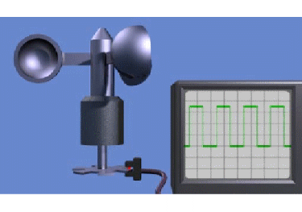

El anemómetro es el dispositivo que mide el viento en la góndola. Normalmente se coloca en la parte posterior de la góndola, así que en realidad, mide el viento no tomada por las Palas.
El modelo más simple del anemómetro se muestra en el siguiente vídeo. Normalmente se trata de dispositivo que genera una señal digital cuya frecuencia depende de la velocidad del viento. Este es un dispositivo que debe ser calibrado.

Una curva típica para este tipo de anemómetros se muestra en la figura siguiente. Suelen se bastante lineales, con uno o dos puntos de cambio de pendiente.

Hay otros tipos de anemómetros, tales como los basados en un alambre caliente (ver detalles técnicos aquí o aquí), así como los basados en el sonar como técnicas (ver detalles aquí).